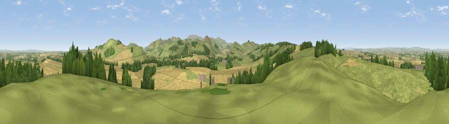

Viewpoint near Wark
#5335 in England · top 27% of its area beats it · near WarkThe view, rendered

A 360° render of this exact spot computed from the terrain model, tree cover and land cover — summer colours, afternoon light, calibrated against photographs of famous viewpoints. Real trees, hedges and buildings will differ in detail.
The panorama
Grey silhouette: terrain skyline in each direction (720 bearings, Earth curvature and refraction included). Dashed green: skyline with trees (+15 m) and buildings (+8 m) as obstacles. Blue strip: how far the ground is visible on each bearing.
Where the view opens
Wedge length = distance to the farthest visible ground on that bearing (vegetation-aware). Rings at 10, 25 and 50 km.
What fills the view
41% grassland · 39% cropland · 19% woodland
Angular shares of the visible panorama (visual magnitude), not map area. Landscape diversity 0.47 (0–1 Shannon).
Key numbers
More beautiful places nearby
The staircase of upgrades: each row has a higher view potential than everything closer. Driving times are estimates from straight-line distance, calibrated against real road routing — check an actual route before setting out.
| Place | Direction | Drive | Score |
|---|---|---|---|
| Moneylaws Hill | E · 3 km | ~7 min | 83.0 |
| Wester Tor | SE · 10 km | ~19 min | 84.9 |
| Viewpoint near Kirknewton | ESE · 10 km | ~20 min | 86.1 |
| Greensheen Hill | E · 21 km | ~36 min | 87.5 |
| Viewpoint near Chillingham | ESE · 26 km | ~41 min | 88.1 |
| Ullock Pike | SSW · 122 km | ~146 min | 89.4 |
| Long Side | SSW · 122 km | ~146 min | 89.5 |
| Viewpoint near Easington | SE · 146 km | ~169 min | 90.2 |
55.60587, -2.25314 · source: screening · position refined by local search. Computed location — check access rights before visiting.